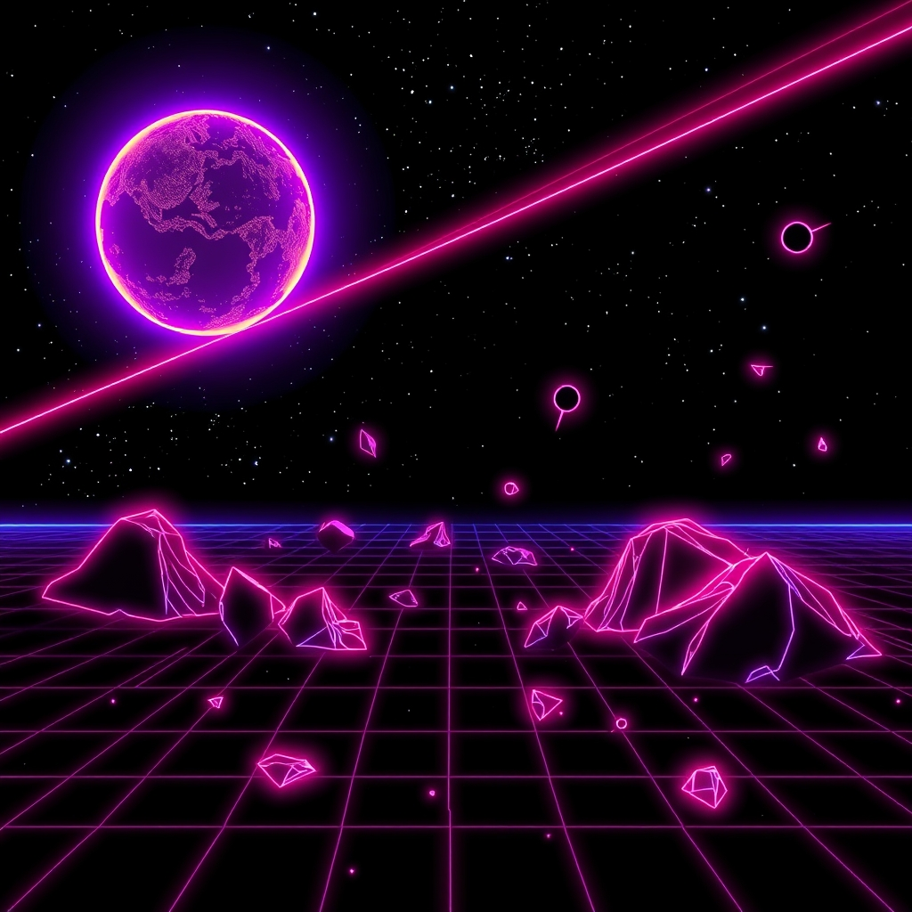

what changed
The song went away and came back with ideas.
musicXLIIchapterv42 David Friedrich30 August 2026 · 12:31
David Friedrich30 August 2026 · 12:31
what happened
David went after the thing Safari does to the sound a few minutes into a flight, and found every note the cabinet had ever played still wired into the graph - thirty-four thousand of them by the fourth minute, every one still being mixed. Chrome had been sweeping up after us the whole time. The dead ones are unplugged now, and the band comes back on its own when you return to the tab.
landed as “The band stops coming apart in the fourth minute”
the numbers
- 4sectors touched
- 176lines aboard
- 1jettisoned
- 12:31on the clock
- 0days after v41
- 37thversion by David Friedrich
the commit, drawn
Drop a coin in this one: git checkout b75b3350